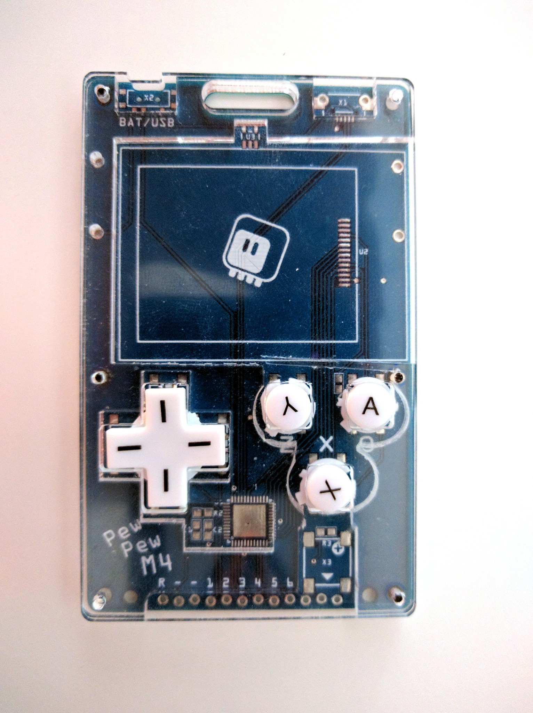
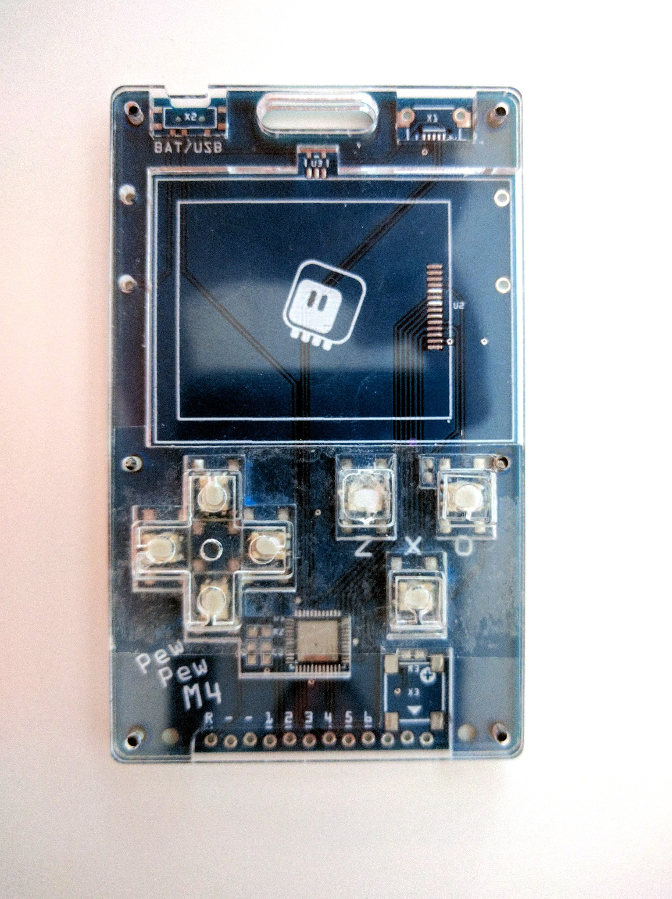
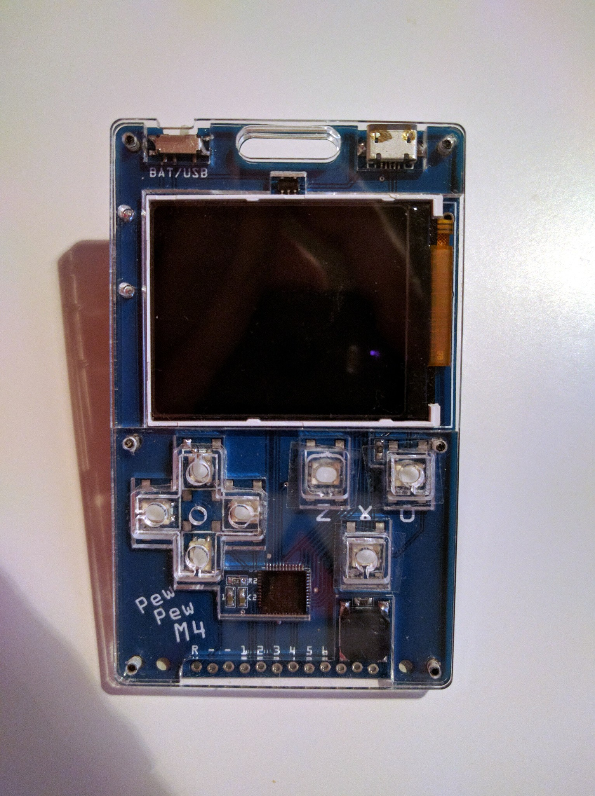

More Button Experiments¶
Published on 2019-11-13 in PewPew M4.
As I pronounced two logs ago, the current design is the best I can come up with the laser-cut d-pad and those 6x6 buttons. However, there is one more way, and that is using plastic d-pad and buttons from an existing console. To do that, I needed a new PCB that would accommodate smaller buttons that could fit under the plastic d-pad. That PCB arrived today, so I could try a series of new solutions.
First I tried new 6x6 buttons that I ordered from Mouser, ones with 100gf actuation force. They do much less noise, and are easier to press. However, there is one small problem: because they are of better quality than the cheap switches I used before, and because their stems are held by the d-pad, which angles them when it is pressed, the d-pad has to be very carefully positioned at equal height on each of the button stems for the whole contraption to work properly — otherwise it becomes impossible to press some directions, or pressing one directions also presses other buttons. This is very annoying, so I decided to keep looking for better solutions.
The first one is to use the buttons from a Nintendo DS Lite:
This works pretty well, after a little bit of dremeling on the middle layer, to make room for the button’s collar that keeps it in place. Unfortunately, once I tightened the screws, it became impossible to press the left direction button — turns out the dimensions of the buttons are not precise, and it’s a little bit more than the promised 2.5mm of height. Loosening the screw makes it work again. (There is also the problem of the wrong markings on the buttons, but that could be probably solved by removing them.)
But this gave me an idea. You see, I could use a laser-cut d-pad and caps with those small buttons, if only there was some way of keeping them in place, preventing them from falling out. The plastic ones rely on that collar thing. I could perhaps make a two-layer d-pad and caps with a similar collar, but that would require at least 2 different kinds of acrylic — with different thickness. Plus, gluing them together would make them look bad, as the glue tends to make the transparent acrylic look misty. But I could hold them in place in a different way? How about two-sided tape?
So I put a piece of two-sided tape between the layers of acrylic, and stuck the d-pad cross and the button caps to that. And it works beautifully, even if it doesn’t look so great. But that can be fixed. Encouraged with this, I assembled the whole device, and this time instead of using double-sided tape, I used regular tape, applying to the underside of the top layer only over the button holes. The result of that looks much better:
And it still works perfectly fine. I imagine I could order some die- cut stickers in the right shape for the mass production. Of course the holes in the d-pad and caps become unneeded — I used ones with holes, because I already had them.
There is one small complication with this approach: it works best when the d-pad and caps are cut from acrylic thicker than the front plate. That means I will probably need to go back to two sheets of acrylic, one 2.5mm (or even 3mm, to leave some leeway for variations in dimensions of the parts) for the middle layer and the d-pad and caps, and one 2mm, for the top layer. This shouldn’t be much of a problem when producing more than 5 units, though, as we can fit multiple copies on both sheets then.
Finally, I discovered one more thing: those tiny buttons come in two versions: with regular actuation force, and with lower one. I think I have the regular version now, so I ordered the ones with lower to see if they will feel even better.